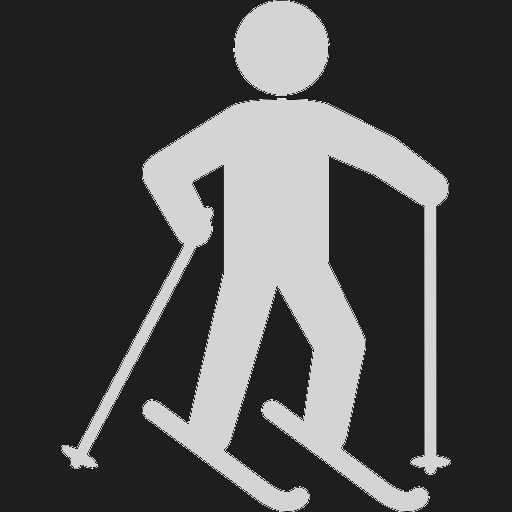
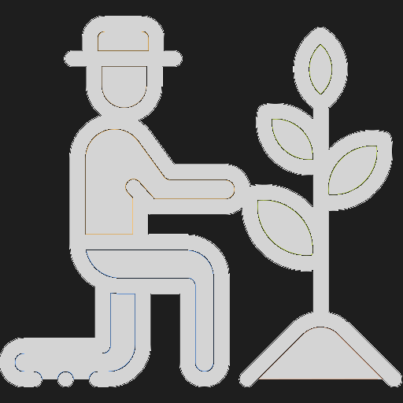
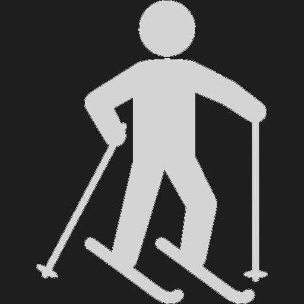
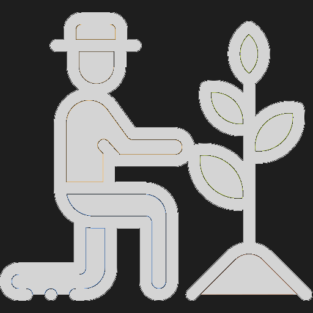

1
2
3
4
5
6
7
8
9
10
11
12
13
14
15
16
17
18
19
20
21
22
23
24
25
26
27
28
29
30
31
32
33
34
35
36
37
38
39
40
41
42
43
44
45
46
47
48
49
50
51
52
53
54
55
56
57
58
59
60
61
62
63
64
65
66
67
68
69
70
71
72
73
74
75
76
77
78
79
80
81
82
83
84
85
86
87
88
89
90
91
92
93
94
95
96
97
98
99
100
101
2
3
4
5
6
7
8
9
10
11
12
13
14
15
16
17
18
19
20
21
22
23
24
25
26
27
28
29
30
31
32
33
34
35
36
37
38
39
40
41
42
43
44
45
46
47
48
49
50
51
52
53
54
55
56
57
58
59
60
61
62
63
64
65
66
67
68
69
70
71
72
73
74
75
76
77
78
79
80
81
82
83
84
85
86
87
88
89
90
91
92
93
94
95
96
97
98
99
100
101
import React, { useState, useEffect } from 'react';
};
const JakubPistekCV =
() => {
|
Pod Harfou 25 190 00 Prague 9 Czechia |
Jakub Pištěk, M.Sc.
|
pistekjakub@gmail.com +420 606 883 909 |

Overview
| Core skills | I am very good at solving complex problems in front-end web development with responsive designs from user’s perspective. In back-end I have been using actively a microservice architecture for the last 2 years. My strength is design and development of microservices using appropriate data structures and algorithms. |
|---|---|
| Areas of interest | Software fullstack development, I like learning new frameworks for an inspiration and writing automation tools to make feature delivery simpler |
Education
| 2011 - 2013 | Czech Technical University, Faculty of Informatics: Knowledge engineering (M.Sc. degree) Diploma thesis: Analysis of Collaborative Filtering Algorithms on Multimedial Data |
|---|---|
| 2008 - 2011 | Czech Technical University, Faculty of Electrical Engineering: Software engineering (B.Sc. degree) Bachelor thesis: Tree Vizualisation and Isomorphism Testing Algorithms |
| 2004 - 2008 | Secondary Technical School focused on Software development, Databases and Networking |
Work Experience
| 11/2017 - now |
(3000 - 4000 employees)
Senior Web developer, InnerWorkings const experience =
"Developing VALO Portal and other supplying projects using agile (scrum) methodology that
covers marketing execution and helps to match Fortune 500 brands with the best suppliers
around the world.
Presenting new features to project stakeholders.";
const technologies = ['.NET CORE', 'SERVICE FABRIC', 'REACT', 'REDUX', 'LESS', 'MSSQL', 'KAFKA', 'MINIO', 'REDIS', 'JENKINS', 'DOCKER', 'KUBERNETES']; |
|---|---|
| 7/2015 - 10/2017 |
(200 - 500 employees)
Web developer, Radio Free Europe/Radio Liberty Inc. experience.concat(
"Development and maintenance of Pangea CMS and responsive front-end for journalists. Pangea CMS
enables to publish multimedia
content in 28 languages and allows to connect with more than 30 social networks.");
technologies.push('.NET CORE', 'ASP.NET WEBFORMS', 'ASP.NET MVC', 'REDUX', 'MSSQL', 'ADO.NET', 'LESS', 'GIT'); |
| 1/2015 - 6/2015 |
(150 - 200 employees)
Senior ASP.NET MVC developer, ePojisteni.cz s.r.o. experience.concat(
"Building a web application which allows to compare over 500 insurance products.");
technologies.push('.NET CORE', '.NET', 'ASP.NET MVC', 'LINQ2SQL', 'MSSQL', 'QUARTZ.NET', 'ABCPDF.NET', 'LESS', 'GIT'); |
| 1/2014 - 1/2015 |
(20 - 25 employees)
ASP.NET WebForms developer, Creasoft s.r.o experience.concat(
"Development and maintenance of two company core products targeted on customers from financial sector
such as banks, pension funds, financial intermediaries, advisors/consultants and insurance
companies.");
technologies.push('.NET CORE', 'ASP.NET WEBFORMS, 'MSSQL', 'LESS', 'TWITTER BOOTSTRAP 3', 'ADO.NET', 'TELERIK WEB CONTROLS', 'TFS'); |
| 12/2010 - 1/2014 |
(5 - 10 employees)
Junior ASP.NET WebForms and MVC developer, Schneedorfer s.r.o experience.concat(
"Part of a team working on automated Internet data-crawler. I was responsible for migrating data from
slow relational databases to graph database (neo4j). Apart of that I have built few e-shops and
improved our CMS.");
technologies.push('.NET CORE', 'ASP.NET WEBFORMS, 'ASP.NET MVC', 'ENTITY FRAMEWORK', 'ADO.NET', 'MSSQL', 'NEO4J', 'D3.JS', 'NVD3.JS', 'CSS', 'SVN'); |
Technology Overview
| Front-end | JS, REACT, REDUX, TYPESCRIPT, CSS, LESS, ANTD, BOOTSTRAP RESPONSIVE DESIGN, KNOCKOUT, AMPLIFY, UNDERSCORE |
|---|---|
| Back-end | .NET CORE, MICROSERVICES, ASP.NET SERVER CONTROLS, EPISERVER FRAMEWORK, KAFKA, DOCKER, KUBERNETES |
| Version Control Systems | SVN, TFS, GIT |
| Databases | MSSQL, MYSQL, MINIO, REDIS, GRAPH DATABASES (NEO4J) |
| Specialities | Software development, Responsive design, Machine learning and data mining alghorithms, Collaborative filtering algorithms, Business intelligence, Nature inspired algorithms |
Knowledge and Skills
enum Level
{ A0 = 0,
A1 = 1,
A2 = 2,
B1 = 3,
B2 = 4,
C1 = 5,
C1 = 6,
Native = 7 }
const languages = {
const languages = {
Czech: Level.Native,
English: (Level.B2 + Level.C1) / 2,
Russian: Level.B1,
German: Level.A2
};
English: (Level.B2 + Level.C1) / 2,
Russian: Level.B1,
German: Level.A2
| Interests | Cycling , Winter sports  , Climbing , Traveling and gardening  , Climbing , Traveling and gardening  |
|---|---|
| Other | Driver's licence B |